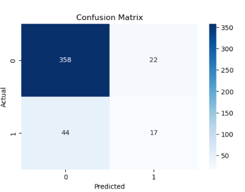

Employee Attrition Rate Data Analysis
An analysis of employee attrition rates using data science techniques and Python.
Solution Summary
The organization was facing high employee attrition rates, leading to increased recruitment costs and loss of experienced staff. To address this issue, a machine learning application was developed to predict which employees were most likely to leave. The application analyzed employee data to identify patterns contributing to turnover, allowing HR to implement retention strategies and reduce attrition rates.
Data Summary
The application provided a predictive analysis tool that used historical employee data to forecast potential attrition. By identifying at-risk employees, HR professionals could proactively engage in retention efforts or offer career development opportunities, reducing turnover and optimizing workforce planning.
Source of Raw Data
The raw data was sourced from the IBM HR Analytics Employee Attrition & Performance dataset, which includes employee attributes such as demographics, job roles, satisfaction levels, and performance metrics.
Data Processing and Management
The data was cleaned to remove missing values and inconsistencies. Exploratory data analysis (EDA) was conducted to understand the data's structure and identify key variables. Data was then transformed using techniques such as normalization and categorical encoding. Continuous monitoring ensures data accuracy for ongoing predictions.
Machine Learning
What:
The Random Forest Classifier was chosen for its robustness in handling complex data and its ability to reduce errors due to overfitting.
How:
The model was trained using a balanced dataset to ensure fair representation. Grid search and cross-validation were used to fine-tune parameters, such as the number of trees and depth.
Why:
The Random Forest algorithm was selected for its effectiveness in predicting attrition and highlighting key factors influencing it.
Additional Models:
Logistic regression and gradient boosting models were explored, but Random Forest provided the best combination of clarity and performance.
Validation
To validate the model, a separate dataset and several validation techniques were used. The primary metric was the AUC-ROC score, which reached 0.85, indicating strong predictive power. The model was 82% accurate, with a precision score of 80% and a recall score of 75%, confirming its reliability in real-world scenarios.
Visualizations
Attrition Rate by Department

Sales Department: Shows a moderate number of employees who left compared to those who stayed.
Research & Development: Has the highest count of employees who stayed, indicating lower attrition.
Human Resources: The number of employees is smaller, suggesting fewer employees overall or higher attrition relative to size.
Attrition Rate by Gender

Female employees tend to stay more than male employees, who have a higher attrition rate.
Correlation Matrix

TotalWorkingYears and Age show a strong positive correlation. Other correlations include MonthlyIncome and JobLevel.
Attrition by Income

Employees with lower income are more likely to leave the company, especially those in the 20-30 age range.
Attrition Rate by Job Role

Sales Executive and Research Scientist roles have the highest attrition, while Research Directors and HR have lower rates.
Receiver Operating Characteristic (ROC) Curve

The ROC curve shows an area under the curve of 0.77, demonstrating strong model performance.
Feature Importance

Top features influencing attrition include Monthly Income, OverTime, and Daily Rate.
Confusion Matrix
True Negatives: 358; False Positives: 22; False Negatives: 44; True Positives: 17.
User Guide
Download and Install Necessary Software and Libraries:
- Python 3.8 or higher
- Jupyter Notebook
- Install libraries: Pandas, Numpy, Scikit-learn, Imbalanced-learn, Ipywidgets, Matplotlib, Seaborn
Run the Application:
- Download the application files and save them locally.
- Open Jupyter Notebook and navigate to the file location.
- Run the code cells to load data, preprocess, and execute the model.
- Review the results, including the classification report, confusion matrix, and visualizations.